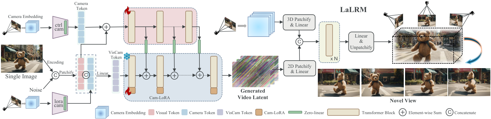
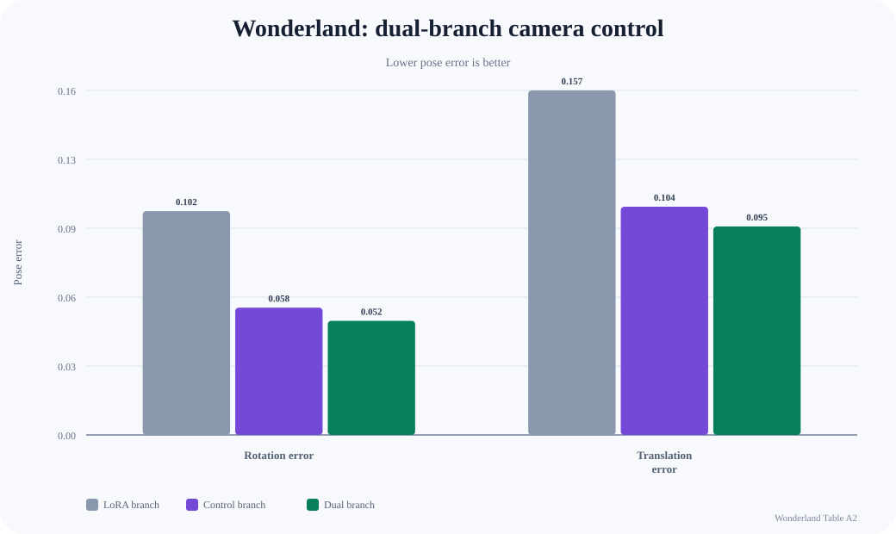
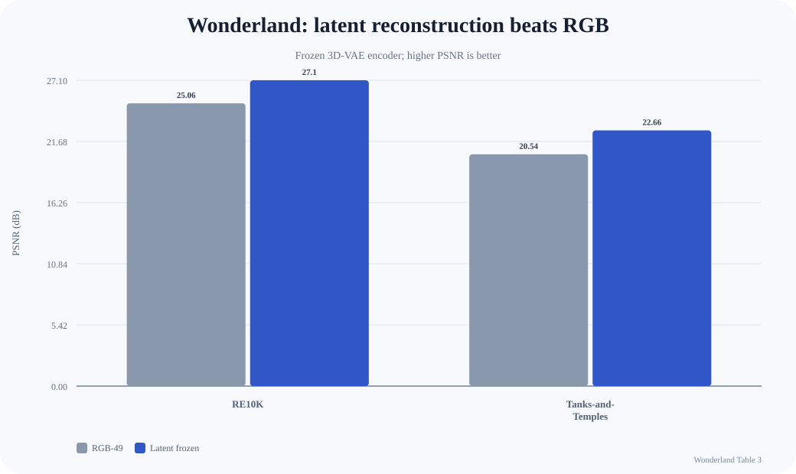
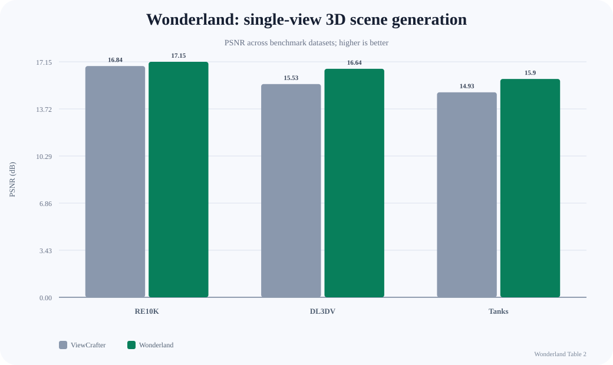

核心结论
关键证据
系统总览：视频 latent 是生成与重建的共享语言
生成器制造多视角证据，LaLRM 将这些证据前馈编译成可持续渲染的 3DGS。
输入单张图像和目标相机轨迹后，双分支相机控制的 CogVideoX-5B-I2V 生成 3D-aware video latent；LaLRM 直接接收 latent 与相机 Plücker token，输出显式 Gaussian scene。它绕过“解码视频 → 再编码图像特征 → 每场景优化”的传统链路。

生成端：把单图扩展成可重建的伪多视角观测
后端 3DGS 能否成立，取决于视频生成器是否静态、跨视角一致且服从相机。
普通 I2V 生成器可能忽略相机或让物体运动，这两种误差都会让静态重建失败。ControlNet branch 复制基础模型前 21/42 个 Transformer block，逐层注入 Plücker ray，主要提供强 pose control；LoRA branch 在冻结主干上用 rank-256 LoRA 适配静态场景与相机特征，主要保护画质、泛化并抑制动态。
| 结构 | R_err↓ | T_err↓ | 主要作用 |
|---|---|---|---|
| LoRA branch | 0.102 | 0.157 | 静态域适配与低成本主干调整 |
| Control branch | 0.058 | 0.104 | 更强的轨迹控制 |
| Dual branch | 0.052 | 0.095 | 兼顾画质与控制 |

共享 latent：两项任务真正的接口
LaLRM 直接从扩散 latent 提升到 3D，不经过“解码 RGB → 再做图像特征提取”。
49×480×720 视频经冻结 3D-VAE 压缩为 13×60×90 latent，token 数在时空上缩小 256 倍。视频 latent 保存生成先验、跨帧对应和感知细节，Plücker token 则给出每个特征对应的相机射线。
两组 token patchify 到同样长度后按通道拼接，进入 24 层、hidden size 1024 的 Transformer。3D-DeConv 为每个像素位置预测 RGB、scale、quaternion、opacity 和沿射线距离，组合成约 423 万个 Gaussian。
为什么冻结 VAE

训练数据如何弥合真实重建与生成分布
LaLRM 训练时最初看真实视频 latent，推理时却看扩散生成 latent；progressive curriculum 专门处理这个 domain gap。
第一阶段在低分辨率、有真实相机标注的视频上学习 3D geometry。49 帧 sampled clip 是 seen views，同时再用 24 个不在 latent 输入中的 unseen views监督，使模型不能只复制输入帧。
第二阶段升到 480×720，并加入 2 万条由自家相机可控生成器产生的 in-the-wild latent。图像 prompt 来自 Flux，轨迹来自 RE10K；生成 latent 是 LaLRM 输入，latent 解码帧提供监督，从而让后端适应部署时的生成分布。
- 低分辨率训练 200K iterations，高分辨率微调 100K iterations。
- 每个场景共用 48 个监督视角：24 seen + 24 unseen。
- 加入生成 OOD 数据后，Tanks LPIPS 从 0.359 降到 0.344，定性泛化改善更明显。
端到端结果与准确归因
结果来自相机控制、稳定 latent、前馈重建和生成分布适配的共同作用。
Wonderland 在 RE10K、DL3DV 与 Tanks 的单图 3D scene generation 上均超过 ViewCrafter；优势集中于遮挡区和大幅偏离输入视角的区域。这支持“生成 prior 补信息、显式 3D 固化一致性”的分工，但并不证明每个模块单独造成全部收益。
接口仍不完全闭合

融合的准确定位：生成证据，再编译成 3D
Wonderland 是串联式、单向融合，不是生成与重建的闭环联合优化。
视频模型用 diffusion objective 单独训练，LaLRM 用 3DGS rendering loss 单独训练。重建 loss 不会反向改善生成器的相机控制或几何一致性；共享 latent、相机坐标协议和生成数据微调负责把两个阶段接牢。
因此可以把生成器理解成“伪多视角证据制造器”，把 LaLRM 理解成“把瞬时、可能带 hallucination 的证据编译成持久 3D 表示的编译器”。
局限与开放问题
- 偶发物体运动会破坏静态 3DGS；方法当前聚焦静态场景。
- 推理约 5 分钟，主要耗时仍来自视频扩散，而非 LaLRM。
- LaLRM 能固化 hallucinated 内容的一致性，但没有外部证据判断遮挡补全是否真实。
- 生成与重建没有端到端反馈，生成器的几何误差只能由下游吸收或通过 COLMAP 重估 pose。
证据与推断边界
- 论文直接验证：双分支相机控制、latent vs RGB、冻结 vs微调 encoder、生成 OOD 数据的收益。
- 方法解释：共享 latent 是 representation bridge，相机 Plücker 是 coordinate bridge，progressive data 是 distribution bridge。
- 未验证：若让 3D rendering loss 反传到视频生成器，是否能进一步提升几何一致性。
来源与版本
Wonderland Figure 2 来自 arXiv HTML；消融与 benchmark 图为从论文表格转录的 SVG，均保留精确来源。数值对应 arXiv v2。
- Wonderland PDF — arXiv:2412.12091
- Wonderland §3.2 — 相机可控视频 latent 生成
- Wonderland §3.3 — LaLRM 与 progressive training
- Wonderland §4.2 — 3D scene generation 结果
- Wonderland §4.3 — latent/RGB 与 encoder 消融
- Wonderland Appendix A — 双分支相机控制消融